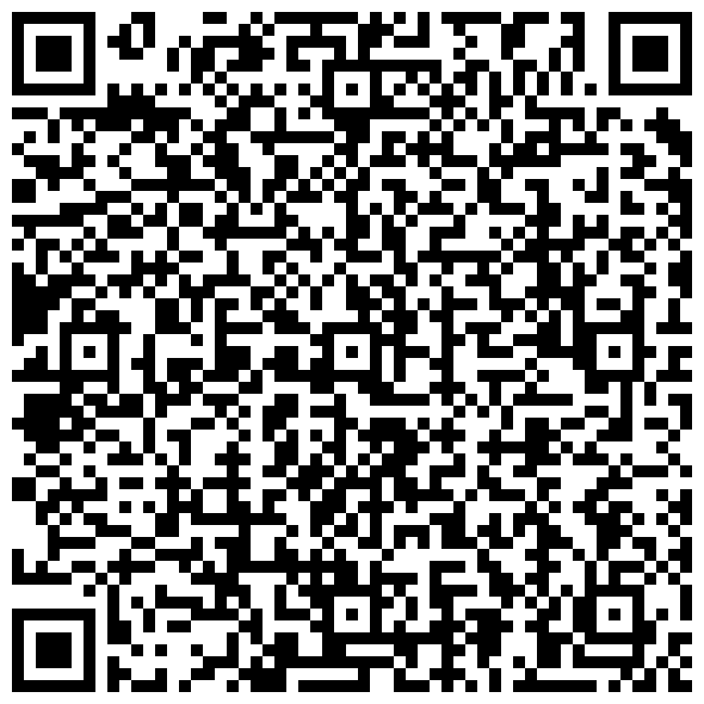

Бунин
…приветлив, но сдержан, говорил довольно оживленно, но еще более просто и кратко и во время
разговора все думал о чём-то своем, предоставляя собеседнику самому улавливать переходы в скрытом
течении своих мыслей.
А. П. Чехов
Прочитайте информацию о таком художественном приёме, как
подтекст.
подтекст по QR-коду:

Найдите подтекст в сцене, произошедшей между Войницким, Астровым и Еленой Андреевной, отметьте
конкретные строчки в разговоре и попробуйте расшифровать этот подтекст.